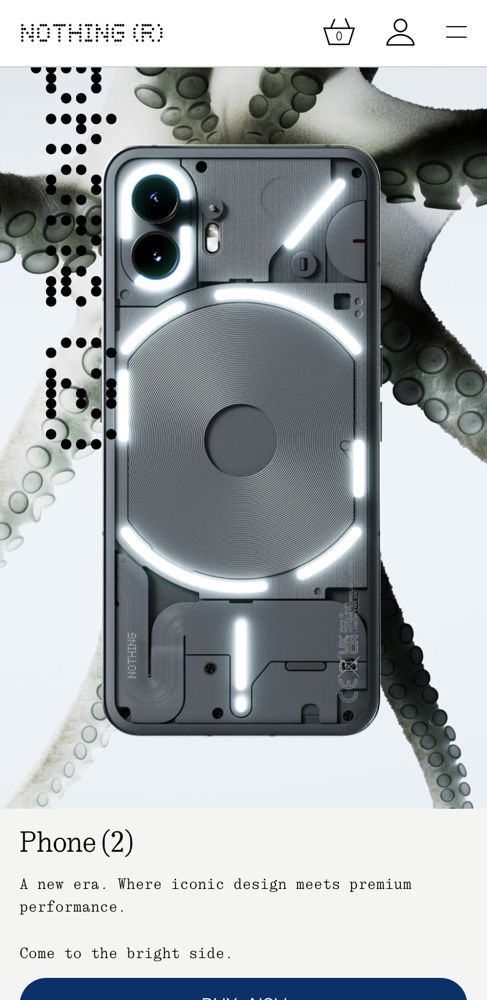

PARC: Contrast
Apple.comApples home page is a great example of contrast. The stark difference between the white and black keeps the website looking clean and neat. Adding the contrast to this website creates a better experience for the visiter.
Hick's Law
Nothing.tech Here on the screen we only have one product, they limit all the other choices on there site to one product. For each piece of tech they have only the most resent products is shown to the visitors
White Space and Clean Design
Squarespace.comThis design is perfectly minimal so that you can admire their page. It even has a light funnel that leads you directly to build a website because you automatically know that there users know what the site is about.